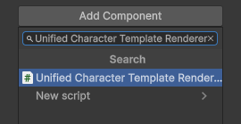
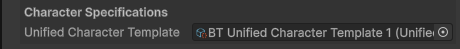

Unified Character Template Renderer Component
The Unified Character Template Renderer creates a new Unified Character from a Unified Character Template and renders it in-game.
This component is responsible for:
- Creating a unified character
- Applying the Character Shader
- Assigning the Animator Controller (Optional)
- Managing Overlay Layers
Requirements:
- A Unified Character Type
- At least one Unified Character Template

Quick Setup Overview
Quick overview of how to setup the Unified Character Tempalte Renderer component.
- Add the component to a GameObject.
- Assign Renderer (Usually a Sprite Renderer).
- optionally assign Animator.
- Configure Loading Settings.
- Assign the Unified Character Template you want to use.
- Play your game and if Load Character On Start is enabled, your character will be displayed.
Setup
Full step-by-step guide to setup the Unified Character Tempalte Renderer component.
Add Component
Add the component to a GameObject by clicking Add Component in the inspector window.

Assign Renderer Component
Assign the component responsible for rendering the character's sprites.
In most cases, this will be a Sprite Renderer. The Character Shader will be applied to this renderer.

Assign Animator Component (Optional)
If your Character Type asset includes an Animator Controller, it can be applied automatically when the character is loaded.
To enable this:
- Enable
Set Animator Controller. - Assign the target Animator component.

Configure Loading Settings
The Loading Mode determines how the character is loaded at runtime. This can significantly impact performance.

| Loading Mode | Description | Advantages | Cons |
|---|---|---|---|
| Asynchronous | Loads the character in the background. | No frame stutters or freezes. | Character is temporarily invisible while loading. |
| Synchronous | Loads the character on the main thread. | Character is immedietely renderered the same frame. | May cause frame stutters depending on spritesheet size. |
Recommended Usage
- Use Asynchronous loading for background NPCs or characters that aren't time sensitive.
- Use Synchronous loading when the character must appear Immediately, such as a player character.
Load Character On Start
If Load Character on Start is enabled, the character is automatically created and rendered during the Start() method
If disabled, the character must be loaded manually through script using the GetAndShowCharacter() method
Assign Template
Assign a Unified Character Template asset.
This will be used to create a new character based on the specifications of the template.

Hit Play

Enter Play Mode.
If Load Character On Start is enabled in Loading Settings, the character will be automatically created and displayed.